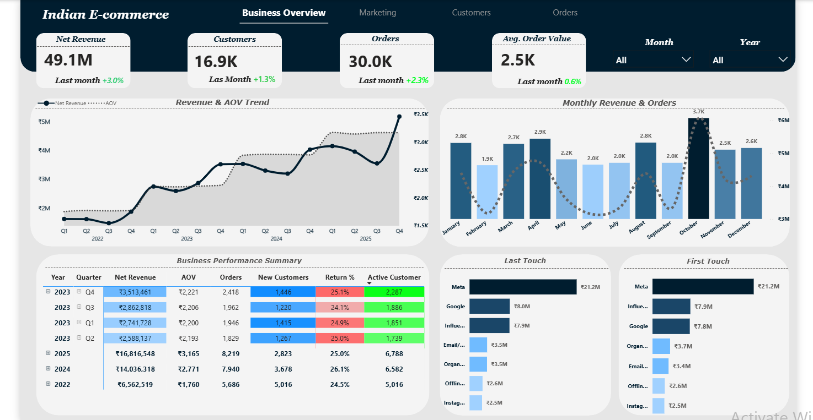
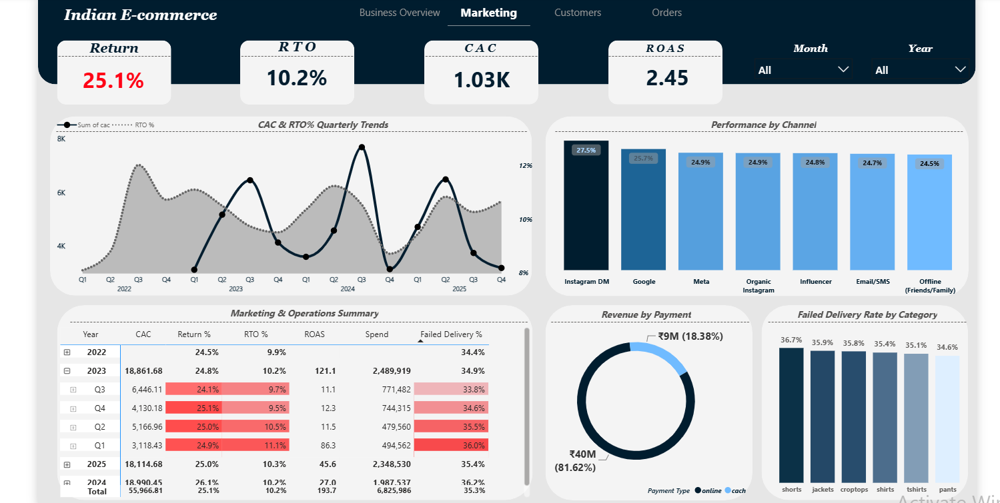
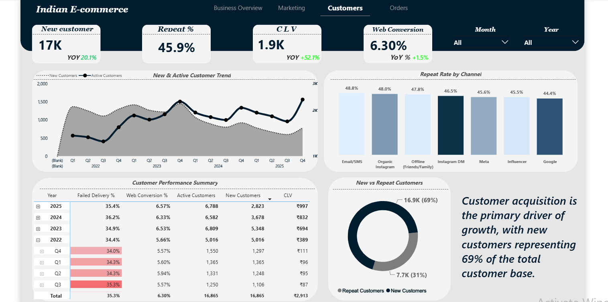
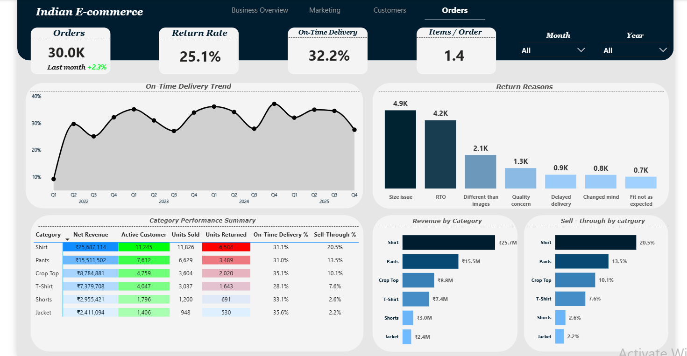
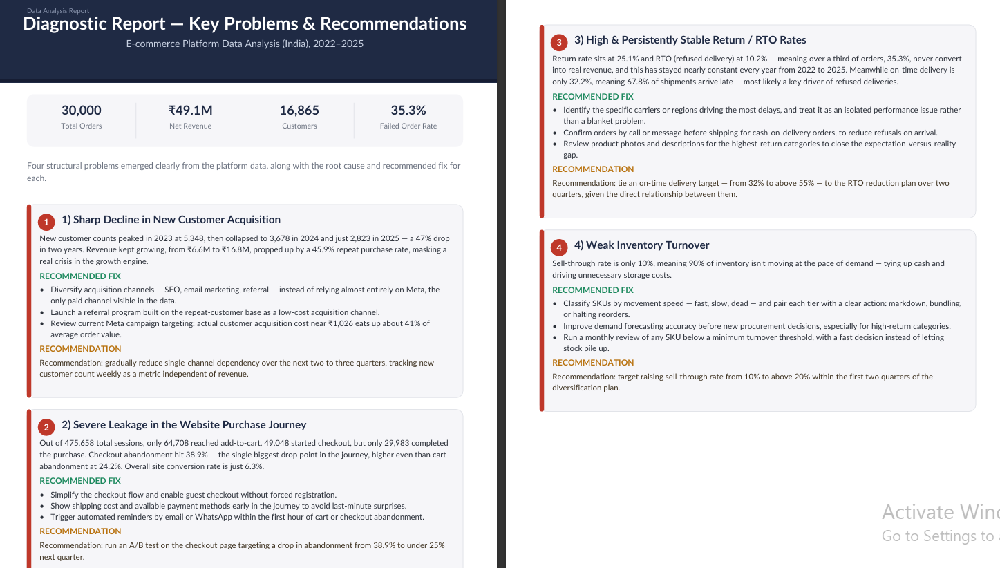
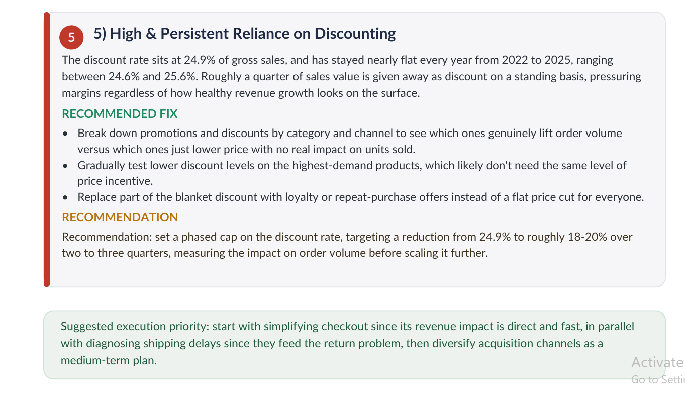

Overview
This project analyzes four years (2022–2025) of transaction data from a public Indian e-commerce dataset — 30,000 orders, 16,865 customers, and ₹49.1M in net revenue. The dashboard was built entirely in Power BI: data load, modeling, and DAX measures, across four pages — Business Overview, Marketing, Customers, and Orders — backed by a written diagnostic report summarizing the five structural problems the data pointed to.
Business Problem
On the surface, revenue growth looked strong — up from ₹6.6M in 2022 to ₹16.8M in 2025. But underneath that line, five separate structural problems were quietly capping the business: new customer acquisition had fallen 47% in two years, checkout abandonment was losing more orders than any other step in the funnel, returns and refused deliveries were stuck at a persistently high rate, 90% of inventory wasn't moving, and a quarter of gross sales was being given away in flat discounting every year.
None of this showed up in the headline revenue number. It only surfaced once the data was broken down by cohort, funnel stage, and SKU — which is what the diagnostic phase of this project set out to do.
Data Cleaning
Data was loaded and shaped inside Power BI's Power Query editor. Preparation included standardizing date and currency fields across the full 2022–2025 range, resolving inconsistent category and channel labels (payment types, marketing channels, delivery carriers), and modeling relationships across orders, customers, products, and marketing-touch tables — so the four dashboard pages could cross-filter cleanly by month and year without duplicating logic.
Analysis Process
The analysis moved through the customer funnel and the revenue statement in parallel: session-to-purchase conversion (475,658 sessions → 29,983 completed purchases), acquisition channel mix and cost, return and refused-delivery rates by category, delivery-time distribution, inventory sell-through by SKU tier, and discount rate as a share of gross sales — each broken down by quarter from 2022 to 2025, to separate one-off dips from patterns that were genuinely structural.
Every DAX measure on the Business Overview, Marketing, Customers, and Orders pages ties back into one of those five threads — the dashboard isn't a stack of unrelated charts, it's the evidence trail behind the diagnostic report.
Tools Used
No handoffs between tools — loading, modeling, measures, and reporting all happened inside Power BI Desktop.
Dashboard
A short screen recording of the Business Overview page, followed by all four dashboard pages.




Key Insights
The diagnostic report below documents exactly what the dashboard surfaced — no severity was invented, this is the ranked order the analysis produced.
New customer counts peaked in 2023 at 5,348, then collapsed to 3,678 in 2024 and just 2,823 in 2025. Revenue kept growing — from ₹6.6M to ₹16.8M — propped up by a 45.9% repeat purchase rate, masking a real crisis in the growth engine.
Out of 475,658 total sessions, only 64,708 reached add-to-cart, 49,048 started checkout, and just 29,983 completed the purchase. Checkout abandonment was the single biggest drop point in the journey — higher even than cart abandonment at 24.2%. Overall site conversion is 6.3%.
Return rate sits at 25.1% and RTO (refused delivery) at 10.2% — a combined 35.3% failed order rate, stable every year from 2022 to 2025. On-time delivery is only 32.2%, meaning 67.8% of shipments arrive late, most likely a key driver of refused deliveries.
Sell-through rate is only 10%, meaning the large majority of inventory isn't moving at the pace of demand — tying up cash and driving unnecessary storage costs.
The discount rate sits at 24.9% of gross sales and has stayed nearly flat every year from 2022 to 2025 (24.6%–25.6%) — pressuring margins regardless of how healthy revenue growth looks on the surface.


Business Recommendations
One fix per problem, with a measurable target.
1. Diversify customer acquisition
- Diversify acquisition channels — SEO, email, referral — instead of relying almost entirely on Meta, the only paid channel visible in the data.
- Launch a referral program built on the repeat-customer base as a low-cost acquisition channel.
- Review Meta campaign targeting: actual CAC near ₹1,026 eats up ~41% of average order value.
2. Simplify the checkout flow
- Enable guest checkout without forced registration.
- Show shipping cost and payment methods early to avoid last-minute surprises.
- Trigger automated reminders by email or WhatsApp within the first hour of cart/checkout abandonment.
3. Fix delivery delays to reduce returns
- Identify the specific carriers or regions driving the most delays as an isolated issue, not a blanket problem.
- Confirm cash-on-delivery orders by call or message before shipping, to reduce refusals on arrival.
- Review product photos and descriptions for the highest-return categories.
4. Rescue inventory turnover
- Classify SKUs by movement speed — fast, slow, dead — and pair each tier with a clear action: markdown, bundling, or halting reorders.
- Improve demand forecasting accuracy for high-return categories before new procurement.
- Run a monthly review of any SKU below a minimum turnover threshold.
5. Cap the discount rate
- Break down promotions by category and channel — which lift order volume versus which just lower price.
- Gradually test lower discounts on the highest-demand products.
- Replace part of the blanket discount with loyalty or repeat-purchase offers.
Suggested execution priority: start with simplifying checkout since its revenue impact is direct and fast, in parallel with diagnosing shipping delays since they feed the return problem, then diversify acquisition channels as a medium-term plan.
These are the improvement targets proposed to the platform team based on the analysis above — not yet-implemented outcomes.